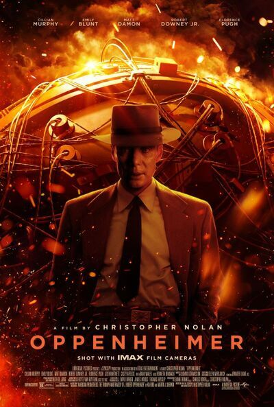

|  | |
‘Oppenheimer’ Review: A Man for Our TimeYou'll have to have your wits about you and your brain fully switched on watching Oppenheimer as it could easily get away from a nonattentive viewer. This is intelligent filmmaking which shows it's audience great respect. It fires dialogue packed with information at a relentless pace and jumps to very different times in Oppenheimer's life continuously through it's 3 hour runtime. There are visual clues to guide the viewer through these times but again you'll have to get to grips with these quite quickly. This relentlessness helps to express the urgency with which the US attacked it's chase for the atomic bomb before Germany could do the same. An absolute career best performance from (the consistenly brilliant) Cillian Murphy anchors the film. This is a nailed on Oscar performance. In fact the whole cast are fantastic (apart maybe for the sometimes overwrought Emily Blunt performance). RDJ is also particularly brilliant in a return to proper acting after his decade or so of calling it in. The screenplay is dense and layered (I'd say it was a thick as a Bible), cinematography is quite stark and spare for the most part but imbued with rich, lucious colour in moments (especially scenes with Florence Pugh), the score is beautiful at times but mostly anxious and oppressive, adding to the relentless pacing. The 3 hour runtime flies by. All in all I found it an intense, taxing but highly rewarding watch. This is film making at it finest. A really great watch. |
|
| During World War II, Lt. Gen. Leslie Groves Jr. appoints physicist J. Robert Oppenheimer to work on the top-secret Manhattan Project. Oppenheimer and a team of scientists spend years developing and designing the atomic bomb. Their work comes to fruition on July 16, 1945, as they witness the world's first nuclear explosion, forever changing the course of history. | |
| Release date: July 21, 2023 (USA) | |
| Director: Christopher Nolan | |
| Nominations: Golden Globe Award for Cinematic and Box Office Achievement,... | |
| Budget: 100 million USD | |
| Distributed by: Universal Pictures | |
| Adapted from: American Prometheus: The Triumph and Tragedy of J. Robert Oppenheimer |